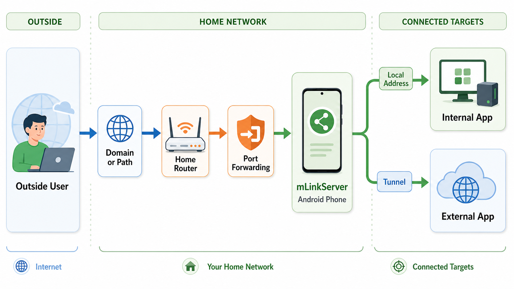

원하는 도메인이나 경로로 링크를 만들고, 그 요청을 원하는 대상 서버로 연결하세요.
mLinkServer는 안드로이드 기기에서 직접 개인용 링크와 접속 진입점을 구성할 수 있게 도와줍니다.
HTTP, HTTPS, SFTP 규칙을 만들고 관리하면서 사용자 접근 권한을 제어하고, 승인된 외부 앱과의 연결도 모바일 화면에서 간단히 다룰 수 있습니다. 별도의 클라우드 서버 없이 원하는 대상 주소로 연결을 중개하고 싶은 경우에 맞춰 설계되었습니다.
연결 흐름 예시

이 예시는 기본 연결 흐름을 보여줍니다. 외부 사용자가 도메인 또는 경로로 접속하면, 요청은 포트 포워딩을 통해 공유기에 도달하고, 안드로이드 폰의 mLinkServer가 이를 받은 뒤 내부 앱의 로컬 주소 또는 외부 앱의 터널 연결로 전달합니다.
주요 기능
- 기기에서 HTTP, HTTPS, SFTP 연결 진입점을 운영할 수 있습니다.
- IP 주소와 포트만 사용하는 대신 원하는 도메인이나 경로 형태의 링크를 만들 수 있습니다.
- 여러 개의 링크 라우팅 규칙을 생성하고 관리할 수 있습니다.
- 사용자, 로그인, 기기 승인으로 접근을 제어할 수 있습니다.
- 승인된 기기와 차단된 IP를 관리할 수 있습니다.
- 직접 IP 접속뿐 아니라 앱 간 연결을 통해 mFileServer와 연결할 수 있습니다.
- 지원되는 원격 대상에는 터널 기반 연결을 사용할 수 있습니다.
- 서버 상태와 설정을 한 곳에서 확인하고 관리할 수 있습니다.
- 옵션을 켜면 재시작 뒤에도 동작을 다시 복원할 수 있습니다.
- 프리미엄 업그레이드로 다중 사용자와 다중 링크 기능을 넓게 사용할 수 있습니다.
프리미엄 기능
- 로그인 필요 모드를 사용할 수 있습니다.
- 로그인 + 승인 모드를 사용할 수 있습니다.
- 더 많은 사용자를 활성화할 수 있습니다.
- 더 많은 링크를 활성화할 수 있습니다.
- 고급 접근 제어 옵션을 사용할 수 있습니다.
개인 연결 관리에 맞춘 앱
mLinkServer는 개인용 연결 관리, 제한된 공유, 그리고 직접 관리하는 리소스에 대한 안전한 접근을 위해 만들어졌습니다. 원하는 도메인이나 경로로 링크를 구성하고, 그 링크를 원하는 대상 서버로 라우팅하며, 지원되는 앱 간 연결을 통해 mFileServer와도 연결할 수 있습니다. 서버 동작과 대부분의 데이터 처리는 사용자가 선택한 설정에 따라 기기 안에서 이루어집니다.
Google Play 인앱 구매는 프리미엄 기능 잠금 해제에 사용됩니다.
서버 버튼, 접근 모드, 링크 목록, 사용자 관리, 외부 앱 연결을 번호별로 설명한 화면 안내를 확인하세요.
보안 안내
로컬 네트워크 밖으로 접근을 열 때는 로그인, 승인, IP 차단 기능을 신중하게 사용하세요. 다른 사람과 링크를 공유하기 전에는 공유기, 도메인, 포트 포워딩 설정을 꼭 다시 확인하세요.